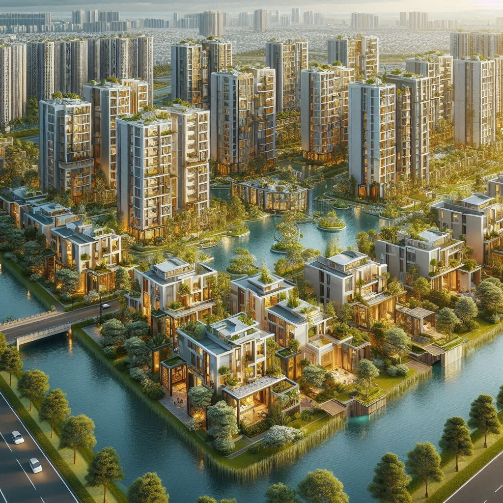
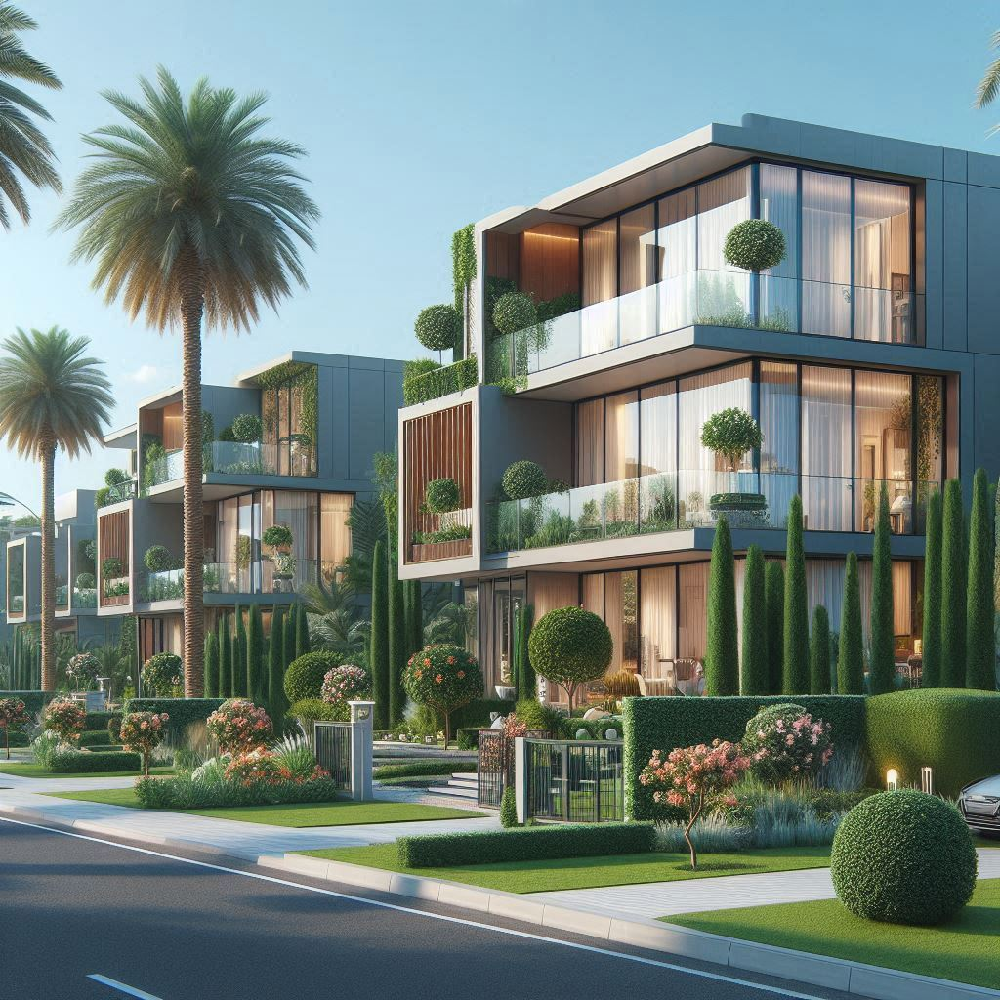
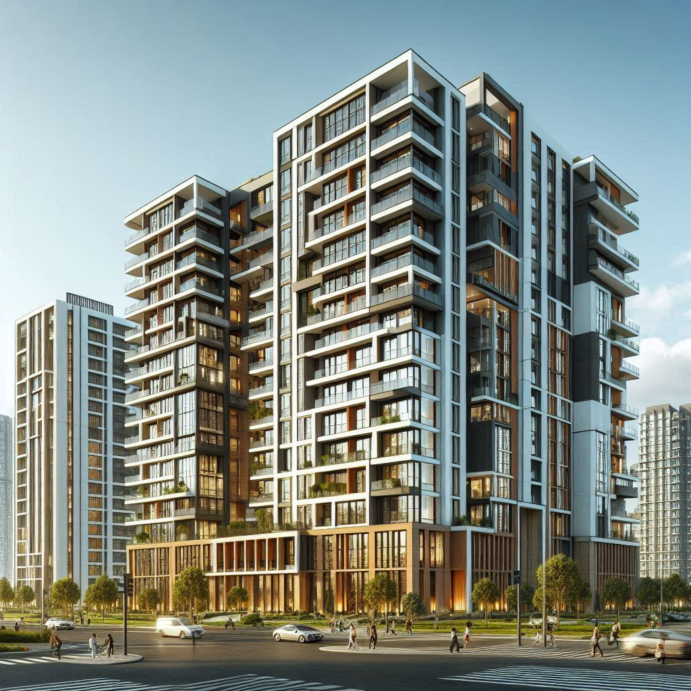
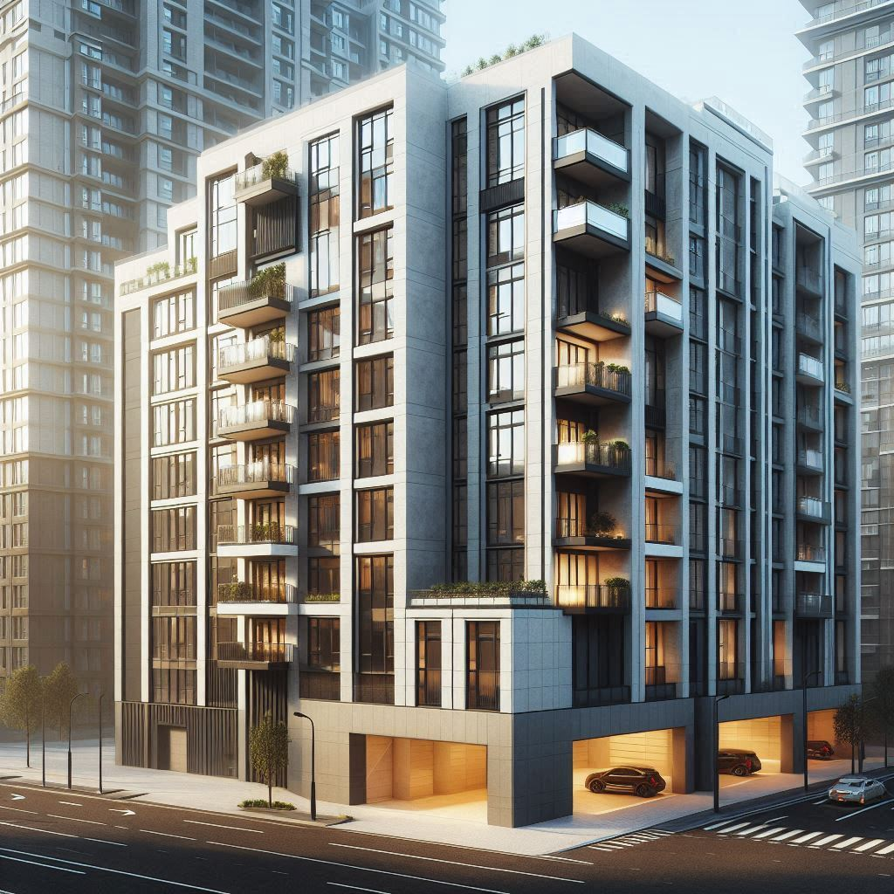

|  |  |  |  | |
| 住房類型簡介 | 透天 | 大樓 | 華廈 | 研習心得 |
生活便利：大樓通常位於城市中心或繁華地區，週邊配套設施齊全，如購物中心、醫院、學校等。
設施完善：大樓內提供各種現代化的設施，如電梯、24小時保全、健身房等，提升了生活品質。
景觀視野好：高層住戶可以享受到更好的城市景觀和自然風光。
隱私性差：由於住戶密集，隱私性相對較低。
維護成本高：大樓的公共設施和設備需要定期維護，費用較高，這些費用通常由住戶共同分攤。
安全隱患：高層建築在火災、地震等災害中存在較大的安全隱患，需要有嚴格的防災措施和緊急應變計畫。